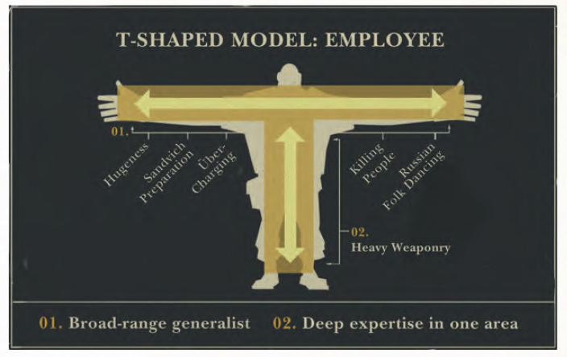

Rodrigo Reyes - 27/06/2015
Développeur, ingénieur, codeur, ingénieur d'études, ingénieur R&D, programmeur, analyste-programmeur, concepteur-développeur, craftman, développeur web, scrum master, chef de projet, architecte, cto, devops, développeur front-end, ingénieur back-end, développeur fullstack, directeur de projet, urbaniste
| Management | Expertise |
|---|---|
|
|
Développeur, ingénieur, codeurs, ingénieur d'études, ingénieur R&D, programmeur, analyste-programmeur, concepteur-développeur, architecte, développeur front-end, ingénieur back-end, développeur fullstack

Langages, frameworks, technos
expériences, projets, intérêts personnels
Certifications, NIH, Attachement à son code
Virtuosité technique